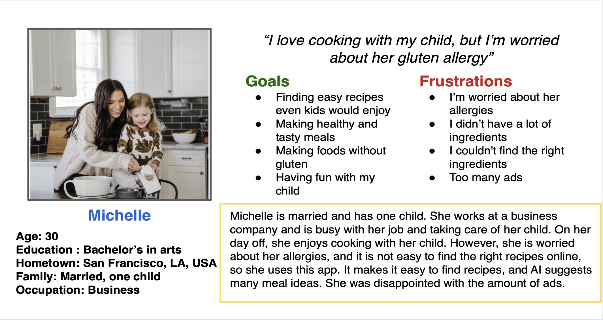
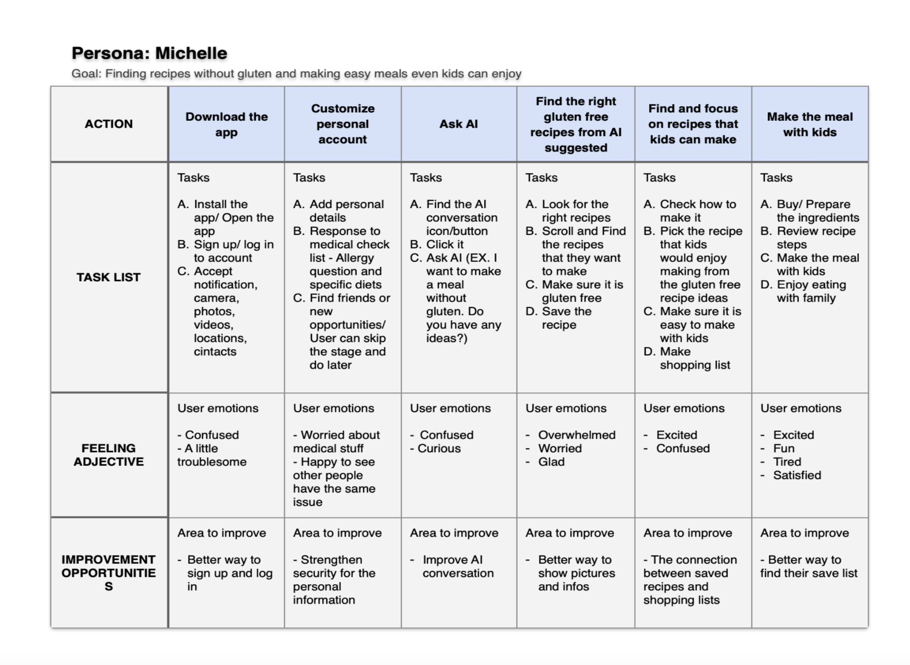
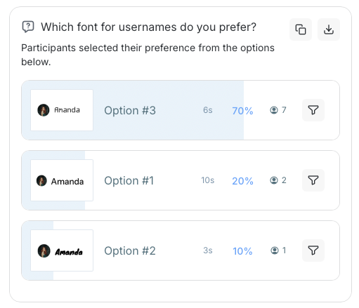
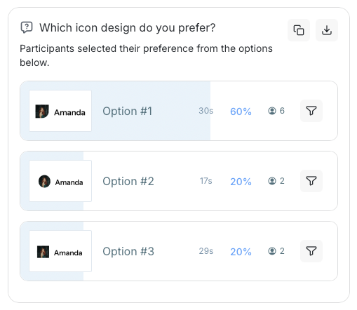
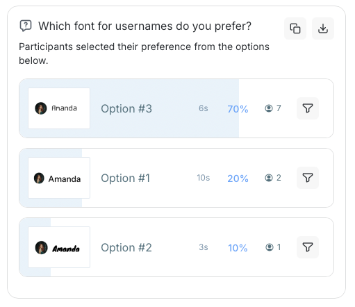
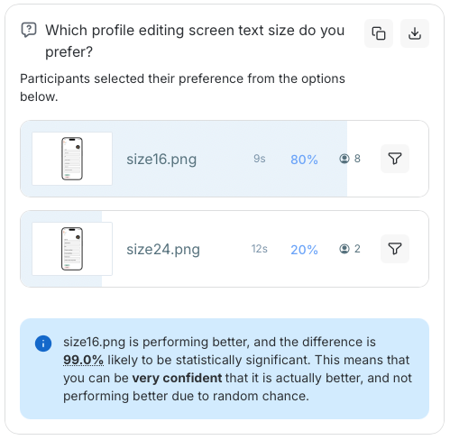
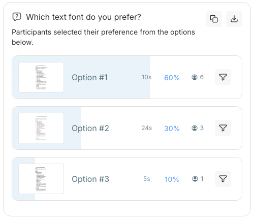
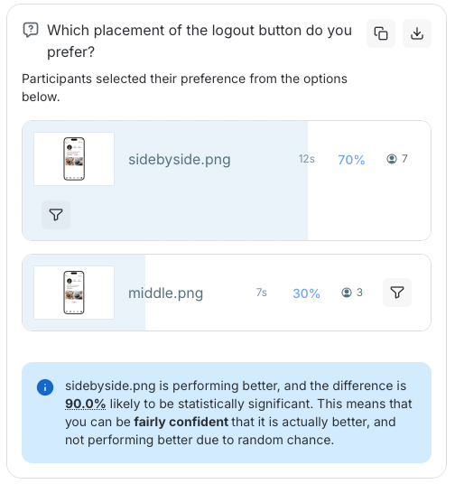
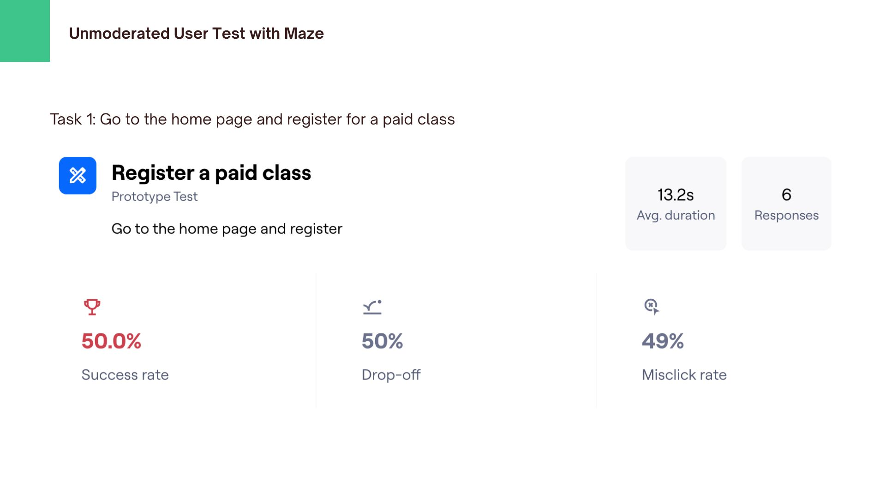

Foody with AI
This app is designed for food lovers, allowing users to share their own recipes, connect with others who share similar interests, and find support for specific dietary needs or food allergies. It also provides personalized weekly meal suggestions powered by AI, helping users simplify meal planning and discover new recipe ideas. The goal of the app is to make cooking and meal planning more enjoyable, accessible, and inclusive for everyone.

Role
- Designer
- Tester
Tools
- Adobe Illustrator
- Figma
- Jotform
- Lyssna
- Maze
Coopyright
The photos of ingredients and flavors are from Unsplash.
Personas & Problems


Design Survey - Jetform
I conducted a survey using Jotform to understand users’ interest in food and their willingness to spend money on food-related activities such as discovering recipes, attending cooking classes, and exploring new culinary experiences.
The survey also aimed to identify how many users are willing to pay for food-related knowledge and services, such as recipe ideas, cooking tips, and dietary expertise.
Regardless of age or gender, over 70% of respondents cook at least once a week. More than half have previously spent money on food-related products or experiences. In addition, nearly all participants expressed interest in discovering new recipes and food-related knowledge.
Users also reported that they gather information through various sources, including books, the internet, social media, and cooking classes.
Based on these findings, there is a clear opportunity to provide accessible and informative cooking classes, as well as a premium platform that connects food professionals and educators with interested users.
Preference Tests (visuals & typography) - Lyssna
I conducted two preference tests using Lyssna to explore users’ preferences for visual design elements in the app, including icon style, typography, and layout.
The tests aimed to identify the most user-friendly layout that supports smooth navigation, evaluate whether users can understand icon meanings on their own in a simplified interface, and determine which typeface is the most readable and approachable.






According to the results, 70% of users preferred a robotic-style typeface for usernames, while 60% indicated that a clean and highly readable font is better for longer text.
In terms of visuals, 60% of participants preferred icons with a paper-like appearance, and 50% were able to correctly recognize the edit button based on the icon alone.
These findings suggest that playful and distinctive design elements in usernames and icons can increase engagement and create a more enjoyable user experience. However, for longer text, familiar and commonly used typefaces are preferred due to their readability and approachability.
Overall, using clear and recognizable icons instead of text can support smoother interactions by aligning with users’ intuitive and automatic understanding.
Unmoderated User Test - Maze
I conducted an unmoderated user test using Maze to understand user behavior and how they interact with the app’s visual design and layout
The test aimed to evaluate whether users could complete tasks without additional guidance, observe how they navigate and interact with the interface, and identify areas for improvement in navigation and overall user flow.

According to the results, 50% of users were able to complete the class registration, while the other half were not. Although over 80% of users achieved their goals, more than 50% experienced misclicks during the process. In addition, 50% of users found the experience easy, while 17% reported it as difficult.
These findings indicate that paid classes are not clearly visible, making them difficult for users to find and suggesting a need for better prominence in the interface. Furthermore, the high rate of misclicks highlights the need to improve navigation clarity and overall usability.
Moderated Usability Testing Session - Script
According to the results, 100% of users were able to complete their tasks, although some misclicks were observed during the process. In the statement-based feedback (rated from 1 to 5, ranging from “strongly disagree” to “strongly agree”), the average score for “easy to navigate” was 4, while “unnecessarily complex” received an average score of 3.
These findings suggest that while task completion was successful, there are still usability issues to address. In particular, the visibility of paid classes needs improvement, and users reported difficulty understanding when and how classes begin.
Improving the layout and making key actions more visible and intuitive could help users navigate more smoothly and reduce confusion.
High-Fidelity prototype
Developed the final high-fidelity design based on multiple rounds of testing and feedback.
What I changed
Summary & Next Steps
This app leverages AI features to help busy users easily generate recipe ideas and create shopping lists, while also enabling them to connect with others who share a passion for cooking.
Improve the interface by reducing text length and better highlighting key information to guide user attention, while simplifying the recipe posting flow to make it more intuitive and easier for users to input their recipes.